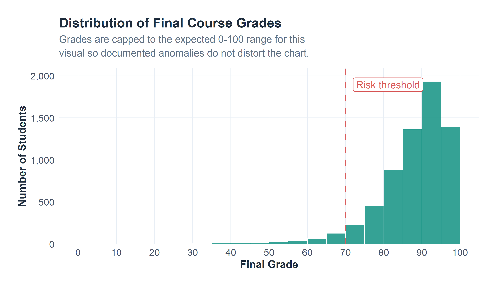
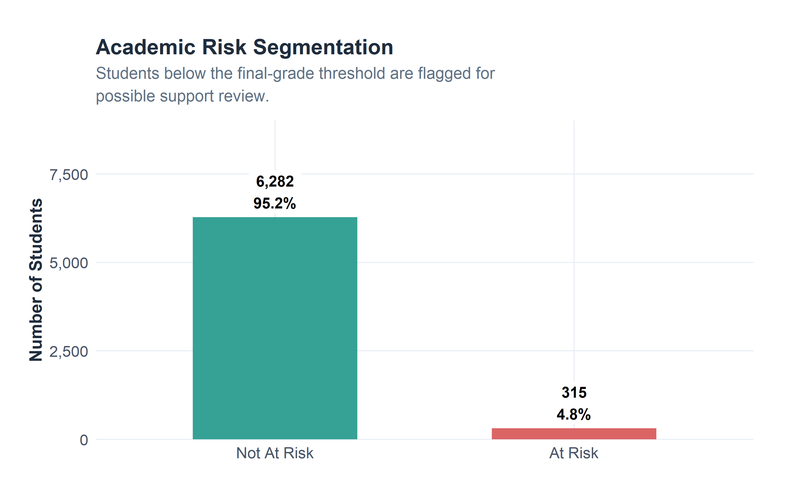
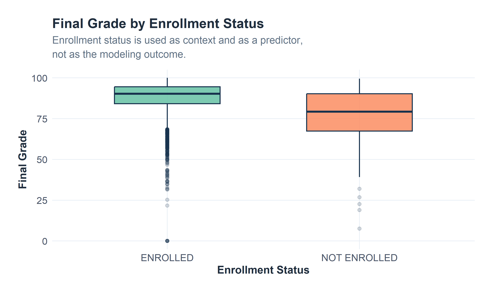
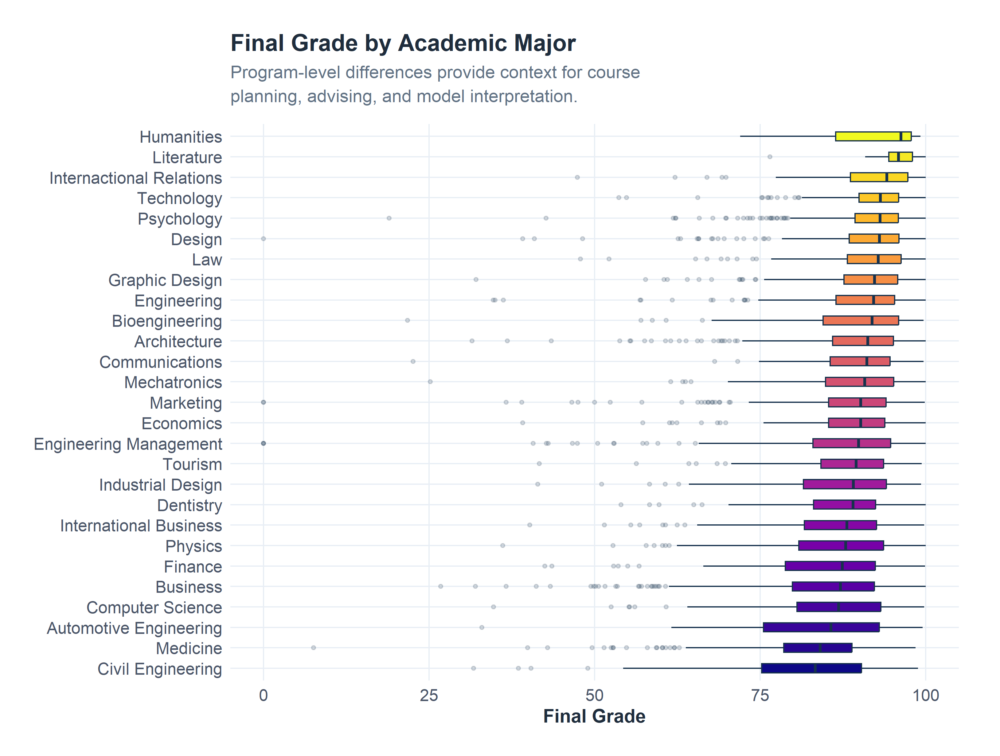
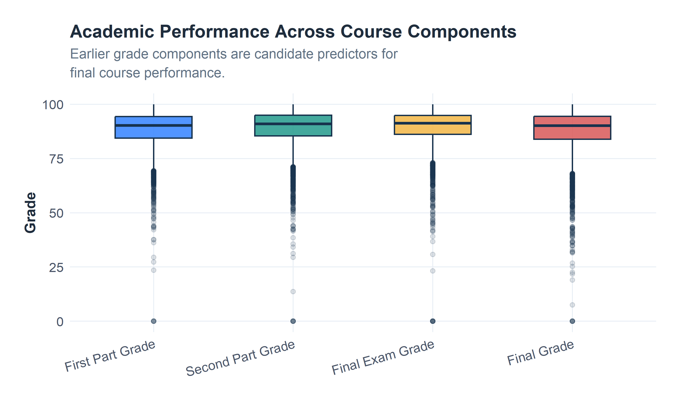
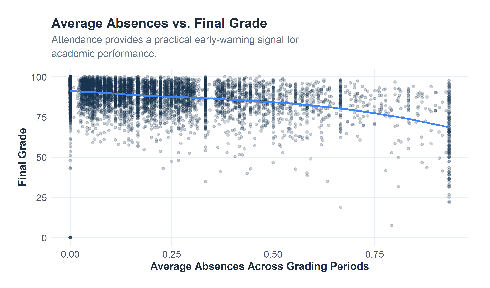
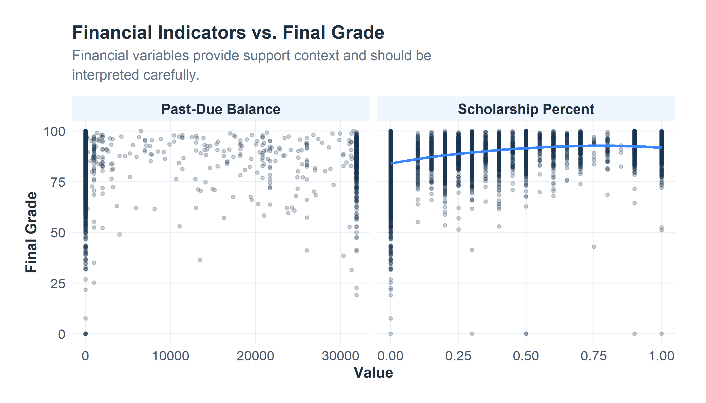
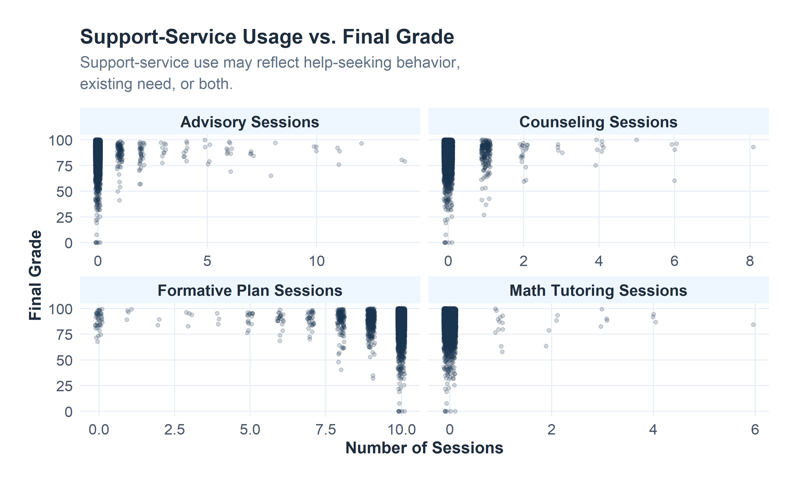
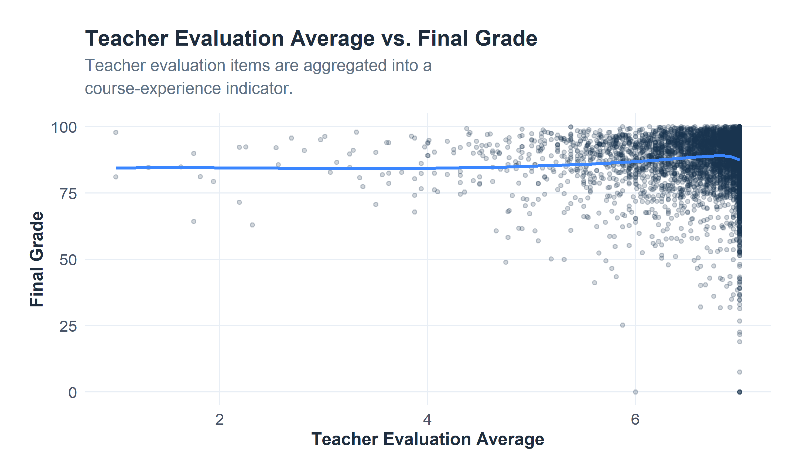
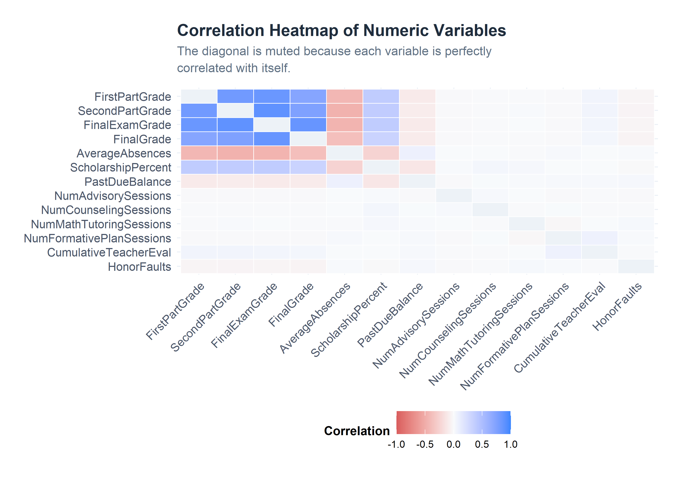

Exploratory Data Analysis
This page reviews the student dataset, variable roles, data quality, engineered features, and early patterns tied to final course performance.
1. Dataset Context, Domain, and Industry
This project uses undergraduate student records from Advance University, a private nonprofit university. The broader context is student retention and student success. In the institutional documentation, retention is defined as whether a student remains enrolled in the current semester after being enrolled in the previous term.
For this project, FinalGrade is used as the primary modeling outcome. EnrollmentStatus is treated as a predictor and context variable rather than the outcome. This setup follows the final project direction: final academic performance is the technical response variable, while enrollment status helps explain academic outcomes.
2. Research Questions
The EDA is organized around three practical questions:
- Which academic, attendance, financial, support-service, and engagement variables appear related to final course performance?
- Which variables should be retained for predictive modeling?
- What data quality issues should be documented before the modeling workflow begins?
3. Variable Measurement Type and Modeling Role
| Variable_Group | Example_Variables | Measurement_Type | Modeling_Role |
|---|---|---|---|
| Student identifier | StudentID | Nominal | Identifier only; not used as a predictor |
| Academic context | Semester, Major, EnrollmentStatus | Categorical | Predictors and context variables |
| Student characteristics | Gender, Origin | Categorical | Context variables; require careful interpretation |
| Academic performance | FirstPartGrade, SecondPartGrade, FinalExamGrade, FinalGrade | Numeric | FinalGrade is the outcome; earlier grade components are predictors |
| Attendance | AbsencesFirstPart, AbsencesSecondPart, AbsencesThirdPart, AverageAbsences | Numeric | Predictors |
| Online learning | NumOnlineCourses | Numeric | Predictor |
| Financial indicators | ScholarshipPercent, PastDueBalance | Numeric | Predictors |
| Support services | Advisory, counseling, tutoring, formative plan sessions | Numeric | Predictors |
| Engagement/course experience | Teacher evaluation items, CumulativeTeacherEval | Numeric | Predictors |
| Conduct | HonorFaults | Numeric | Predictor |
| Derived risk feature | AcademicRisk | Categorical | Support-review feature derived from FinalGrade |
4. Initial Data Inspection
The cleaned dataset contains the original workbook fields plus engineered features used for EDA and modeling. The cards below summarize the key inspection checks without repeating the same information in a second table.
5. Missing Values Review
| Result |
|---|
| No missing values were detected in the cleaned dataset. |
Preprocessing Decision: Missing values are reviewed before modeling. If a model-specific workflow requires complete cases, that filtering is handled during modeling rather than hidden inside the EDA.
6. Outlier and Anomaly Review
Outliers are not automatically removed during EDA. Some extreme values may reflect meaningful cases, such as unusually high absences or large past-due balances. Values outside the expected grade range are documented and handled carefully in plots.
| Grade Range | Records | Display Percent |
|---|---|---|
| Within 0-100 | 6594 | 100.0% |
| Above 100 | 3 | 0.0% |
7. Preprocessing and Feature Engineering Summary
The EDA keeps the original variables visible while adding a small number of features that make the data easier to analyze and model.
| Step | Applied_To | Reason |
|---|---|---|
| Column renaming | Original workbook fields | Improves readability in analysis and modeling code. |
| Type conversion | StudentID, Semester, Major, EnrollmentStatus, Gender, Origin | Categorical fields are treated as categories rather than continuous numbers. |
| AverageAbsences | Absence fields across grading periods | Creates one attendance measure for EDA and modeling. |
| CumulativeTeacherEval | Teacher evaluation items | Summarizes multiple course-experience items into one engagement indicator. |
| AcademicRisk | FinalGrade | Flags students below the support-review threshold. |
| GradeAnomalyFlag | FinalGrade | Documents values outside the expected 0-100 range. |
8. Final Grade Distribution

9. Academic Risk Breakdown

10. Final Grade by Enrollment Status

11. Final Grade by Academic Major

12. Academic Progression Across Grade Components

13. Attendance and Final Grade

14. Financial Indicators and Final Grade

15. Support-Service Usage and Final Grade

16. Engagement Signal and Final Grade

17. Correlation Analysis
The correlation review focuses on numeric predictors and their relationship with FinalGrade. The heatmap mutes the diagonal so perfect self-correlations do not dominate the visual.
| Predictor | Correlation |
|---|---|
| FinalExamGrade | 0.858 |
| SecondPartGrade | 0.752 |
| FirstPartGrade | 0.718 |
| AverageAbsences | -0.384 |
| ScholarshipPercent | 0.316 |
| PastDueBalance | -0.098 |
| HonorFaults | -0.047 |
| CumulativeTeacherEval | 0.036 |
| NumFormativePlanSessions | -0.015 |
| NumAdvisorySessions | -0.012 |
| NumMathTutoringSessions | -0.007 |
| NumCounselingSessions | -0.006 |

18. Preliminary Findings
| Finding | EDA_Interpretation | Modeling_Implication |
|---|---|---|
| Grade components are strongly related to FinalGrade. | Earlier course performance provides a direct signal for final performance. | Retain grade-related predictors for modeling. |
| Average absences are negatively related to FinalGrade. | Attendance appears useful as an early-warning indicator. | Retain AverageAbsences as a predictor. |
| Financial variables add context. | Scholarship and past-due balance may help explain student pressure or support level. | Use financial indicators carefully and interpret them as context. |
| Support-service usage needs careful interpretation. | High support usage may reflect existing need, help-seeking behavior, or intervention activity. | Retain support variables, but avoid causal claims. |
| Grade anomalies exist. | A small number of grade values fall outside the expected range. | Document anomalies and cap only for visualization when needed. |
19. Variable Selection Rationale
| Variable_Group | Decision | Reason |
|---|---|---|
| StudentID | Exclude from modeling | Identifier fields do not provide generalizable predictive information. |
| FinalGrade | Use as outcome | Final course performance is the numeric response variable. |
| EnrollmentStatus | Use as predictor/context | Enrollment status supports interpretation but is not the modeling target. |
| Grade components | Use as predictors | Earlier performance is relevant to final performance. |
| Attendance | Use as predictors | Absence patterns can support early intervention. |
| Financial indicators | Use as predictors | Financial context can help explain support needs. |
| Support-service variables | Use as predictors | Service usage may indicate need or support activity. |
| Teacher evaluation average | Use as predictor | Aggregated engagement/course-experience signal. |
| AcademicRisk | Do not use as direct predictor for FinalGrade | It is derived from FinalGrade and should be used for interpretation. |